|
TapRPG Help
How Do I start?
So you read the guide, and still need a little direction? No problem.
Here's some suggestions on how to spend your stat points.
1. Skills/Stats
First, aquire some skills. Skills will let you kill enemies faster, and even hit multiple enemies at the same time.
The first three skills are cheap, unlockable with 1 SP each.
Skills
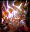
[SMASH] - 1 SP to Unlock |
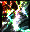
[BREAK] - 1 SP to Unlock |
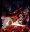
[SLICE] - 1 SP to Unlock |
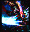
[CLEAVE] - 10 SP to Unlock |
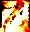
[RAGNAROK] - 25 SP to Unlock |
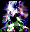
[AVENGER] - 50 SP to Unlock |
[ENDER] - 100 SP to Unlock |
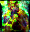
[REFORM] - 50 SP to Unlock |
Smash has a decent damage bonus, and has a short cooldown, allowing you to use it repeatedly to keep damage coming out at an enemy.
Break is the first multitarget skill you get. It doesn't do much damage, but basically lets you hit multiple monsters with normal attack damage.
Slice has a higher damage bonus than Smash, but a longer cooldown. It is still useful for laying down a bit of hurt every few rounds.
After you have these skills, you can decide if you want to wait until later to purchase more skills.
They become a bit more expensive to unlock- up to 100 SP for the first level of Ender, but they do make clearing rounds much easier!
I would suggest saving to purchase at least Cleave and Ragnarok, giving you an additional single-target and multi-target attack, then purchasing Reform, a healing skill.
After a while, you will have enough money to purchase all the skills, and level them up a few times.
This makes them really quite powerful, and it's very difficult to accomplish anything with just the auto-attack.
Stats And Bonuses
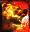
[STR] |

[VIT] |
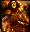
[END] |
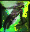
[DEX] |
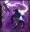
[AGI] |
[CRUELTY] |
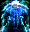
[AEGIS] |
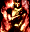
[LIFE] |
[QUICKEN] |
[HASTE] |
[ADEPT] |
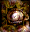
[GREED] |
[BELT] |
[GROWTH] |
If you are just looking to up your clear speed, it is a good idea to invest some points into STR (Strength), DEX (Dexterity), and Cruelty.
Upping your clear speed will let you clear rounds faster, making the EXP and GP come faster.
Haste is also a useful skill to invest into. With Haste Lv 10, combat will move at twice the speed, and you can continue upgrading it (if you have the sp to spare!)
Also useful are Greed and Adept, which will give you a percentage bonus on earned EXP and GP.
This is key to earning more EXP and GP!
Of course, investing everything into those skills will make you a bit weaker than otherwise, but having a bonus for a small investment is a good tradeoff
Remember, all that damage for clear speed will only get you so far. In order to last really long, you will need defense as well!
2. Gear
Upgrading your gear will greatly increase your power.
You don't start out with any money, but doing Instant Action will allow you to easily earn a little bit of gold here and there.
You should easily be able to earn enough GP to upgrade all your gear by one level, as the first level only costs 100GP.
The next level costs 1000, then 2000, then 3100, and so on.
Your weapon, armor, and pendant should be your first priorities.
Later on, a high level flask will let you recover all of your health with one potion!
It will take you a while, but everything is attainable in this game, even though it takes a while to get there.
3. Fight! And keep fighting!
Really. This game is a grind. It's something to pass time with.
On a long trip? Perfect. At lunch at school? Cool.
Try to clear as many arenas as you can, or try to go as long in instant action as you can.
If you can drive yourself to do it, perfect! Do it!
This is the kind of game that I love playing, ones that dump you into a world for you to figure out.
I hope this is enough help for anyone to figure out my game, so happy grinding!
|